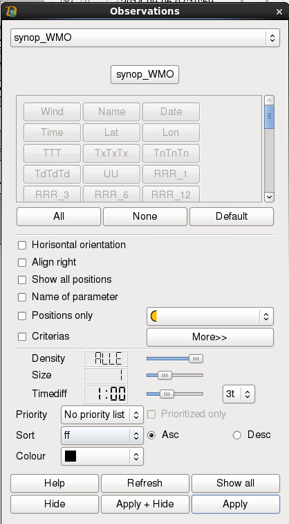

| 
|
-
On the top line plot type is selected.
-
The next lines contain data types. Multiple types can be selected.
-
Then select the parameters which are to be plotted by either manually select
each parameter or buy pressing the All, None or Default button.
-
Show all positions - displays an x where there is no room to display the
observation. By clicking the x, the observation is displayed. PageUp
and PageDown are used to draw the observations which there are no room
for in the first picture.
-
Temp. as integers - shows the temperature, max/min temperature,
dew point and sea temperature as integers (no decimals).
-
All observations (mixing different times)- displays
all observations within the given time interval. This
only applies to synoptic data, non-synoptic data are always displayed.
The observations are sorted so that the ones which fit best time-wise
are displayed first.
-
PPPP - MSLP-field - during editing shows the difference between
observed pressure and the MSLP-field in the observation point. For
synop plots the difference is shown instead of the observed
pressure.
-
Selected observation in popup window - when pressing an observation point
in the main window, a pop up window shows the observation according to
what is specified in the setup file. If there is no specification in setup,
all parameters selected will be shown.
-
Positions only - chosen marker is shown in all observation points.
-
Criteria - chosen criteria are used. Parameters which
have critera are marked with a different colour. Click "More >>"
to edit the criteria.
|
 Observations
Observations